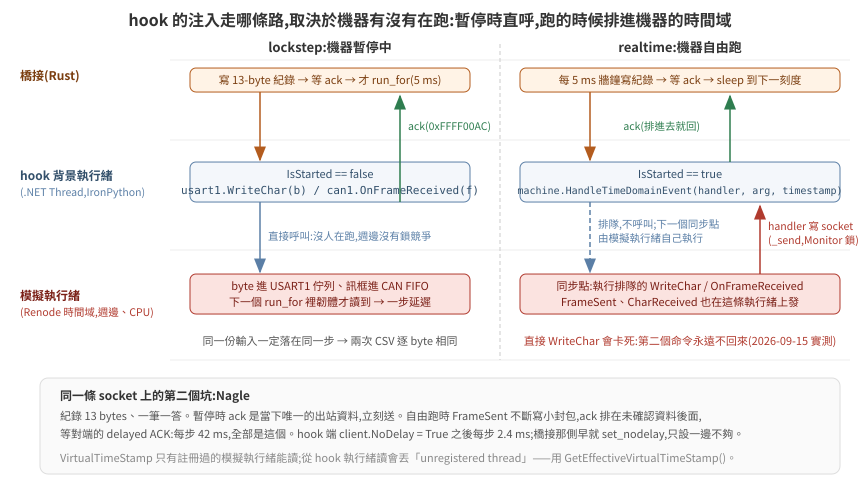
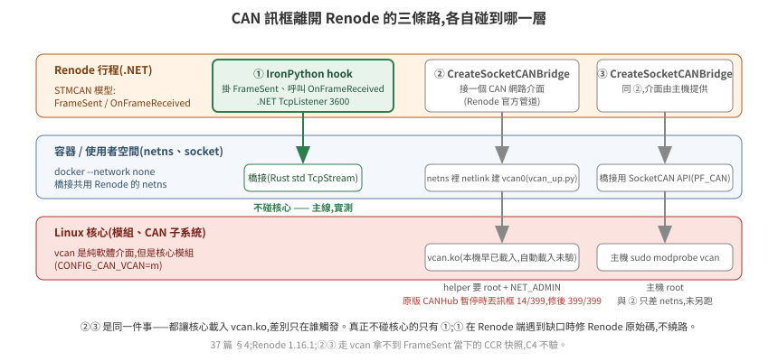

37 · 匯流排訊號串接:External Control、hook,與 CAN 的三條出口
韌體在 Renode 裡跑起來之後,它的輸出在模擬器裡面:PWM 是 TIM3 的 CCR 值、方向是 GPIOB 的兩個腳、狀態回報在 CAN1 的 mailbox。要把這些拿到外面給受控體,又要把編碼器塞回去給韌體,Renode 1.16.1 給了兩條路:一個叫 External Control 的 TCP 二進位 API(時間、GPIO、匯流排讀寫),和它自己的 monitor 級 IronPython(可以掛週邊事件、也能開 socket)。CAN 還有第三條路,要碰主機核心。
這一篇把每種訊號走哪條路、協定長什麼樣、以及 lockstep 迴圈怎麼靠 ack 做到決定性,寫清楚。
驗證狀態:全部在本機實測(Renode 1.16.1,Rust 1.98 std-only 橋接,docker,2026-09-15)。External Control 的線路協定是從官方 C client(
tools/external_control_client/lib/renode_api.c,943 行)逐 byte 讀出來的,官方沒有文件;server 端對照renoderepo v1.16.1 的src/Renode/Network/ExternalControl/*.cs。§4 的 SocketCAN 路線在容器 netns 裡實測(2026-09-16,路 ②);路 ③ 只差主機權限,沒有另外跑。程式碼在examples/hil-stm32/bridge-rs/與renode/hil_hook.py。
1. 每種訊號走哪裡
| 訊號 | 方向 | 出口 | 為什麼 |
|---|---|---|---|
| 時間推進、目前時間 | 橋接 → Renode | External Control run_for / get_time |
lockstep 的節拍 |
| PWM duty | MCU → 受控體 | External Control sysbus_read TIM3 CCR1/CCR2/ARR |
CCR 讀得回(36 篇 §3);訂閱 PWM 腳的邊緣事件每秒會有上萬筆 |
| 方向、致能 | MCU → 受控體 | External Control gpio_get gpioPortB 8/9/10 |
讀的是輸出腳(Connections[n].IsSet) |
| 急停 | 受控體 → MCU | External Control gpio_set gpioPortC 13 |
寫的是輸入腳(OnGPIO(n, v)) |
| 驅動器故障、保險桿 | 板子 → MCU | External Control gpio_set gpioPortC 14/15、0(低有效) |
橋接扮演 pull-up:開機前拉高、IWDG 重啟後再拉一次;故障注入把它拉低(38 篇 §1.2) |
| 雷射 | 受控體 → 上位(不經 MCU) | 受控體文字協定的 SCAN 行 → 橋接 3801 原樣轉 → driver 發 /scan |
橋接只加行首與 seq,不解語意;負對照 blind-scan 在這裡把距離全改成 range_max(38 篇 §6.2) |
| 心跳 | 上位 → MCU | UART PING(0x03)每 100 ms,韌體回 PONG |
橋接腳本模式自己送;ROS driver 也送;300 ms 沒收到韌體降速到 0 |
| 韌體內部狀態 | MCU → 橋接 | External Control sysbus_read g_dbg(17 個字一次讀) |
生效證明與驗收用 |
| 增益、斜坡、安全遮罩 | 橋接 → MCU | External Control sysbus_write 到 flash 裡 .data 初始值的 LMA(開機前),開機後從 SRAM 讀回印 [effect] |
--cfg kp=..,ki=..,accel=.. 掃參數、--negative no-ramp 關斜坡、*-off 關一項安全功能、--fault hang 排一個死機時刻,都不重編韌體(38 篇 §1.1、§1.2) |
| UART(上位協定) | 雙向 | IronPython hook(usart1.WriteChar / CharReceived) |
要 ack(§3);Renode 內建的 socket terminal 也能用但沒有 ack |
| CAN | 雙向 | IronPython hook(can1.OnFrameReceived / FrameSent) |
不碰核心;三條路的取捨在 §4 |
| 編碼器 tick | 受控體 → MCU | hook 一筆 0xFFFF0020(Δtick 左/右)→ Renode 裡的 .NET QuadratureFeeder 對 TIM2/TIM4 的 TI1/TI2 打正交邊緣;或 External Control 寫 CNT |
lockstep 走邊緣(驗 encoder mode),realtime 寫 CNT(每個邊緣 50–100 µs);36 篇 §3.1 |
兩個 TCP 埠:3500(External Control)、3600(hook)。3456 的 socket terminal 留著當對照。
2. External Control API
emulation CreateExternalControlServer "ec" 3500 起 server。Rust client 在 bridge-rs/src/ec.rs,只用 std。線路全部 little-endian:
握手:client 送 u16 count + count 組 (cmd u8, ver u8)。1.16.1 的表是 (1,0) (2,0) (3,0) (4,0) (5,1) (6,0)——GPIO 是 v1,其餘 v0。server 回 1 byte:5 成功;1 是 FATAL,後面接 u32 len + 訊息。
命令框:'R' 'E' cmd:u8 len:u32 data。命令碼:1 RunFor、2 GetTime、3 GetMachine、4 ADC、5 GPIO、6 SystemBus。
回應:第 1 byte 是 return code,之後的形狀依 code 而定:
| code | 意思 | 後面接什麼 |
|---|---|---|
| 0 | COMMAND_FAILED | cmd u8、len u32、訊息 |
| 1 | FATAL_ERROR | len u32、訊息(沒有 cmd) |
| 2 | INVALID_COMMAND | cmd u8 |
| 3 | SUCCESS_WITH_DATA | cmd u8、len u32、data |
| 4 | SUCCESS_WITHOUT_DATA | cmd u8 |
| 5 | SUCCESS_HANDSHAKE | — |
| 6 | ASYNC_EVENT | cmd u8、ed u32、len u32、data |
RunFor 的回應可能被 ASYNC_EVENT 插隊,client 要吃掉事件再等自己的 4。GPIO 事件的 data 是 16 bytes:u64 timestamp_us + bool + 7 bytes 填充——C 版用 sizeof(struct) 帶過,Rust 端要自己算。
實例描述子:GPIO 與 SystemBus 命令先用 id=-1, md, name_len, name 拿一個 i32 id,之後的命令都帶那個 id。名字用 sysbus.gpioPortB 或 gpioPortB 都解得到;sysbus 本身用 "sysbus"。
GPIO 語意(server 端 GPIOPort.cs):GetState(id, pin) 回 peripheral.Connections[pin].IsSet——輸出腳;timer3 也是 INumberedGPIOOutput,所以 PWM 通道用同一個命令讀得到。SetState(id, pin, v) 呼叫 OnGPIO(pin, v)——輸入腳。RegisterEvent 掛在輸出腳的狀態變化上。
SystemBus:id i32, op u8(0 讀/1 寫), width u8(1/2/4/8), addr u64, count u32, data[]。count 是「幾個 width」不是幾 byte;讀 17 個 u32 一個 RPC 就好。
一個踩過的坑:探埠會污染握手。run_loop.sh 第一版用 bash 的 echo >/dev/tcp/127.0.0.1/3500 等埠開,那個換行字元被 server 當成握手的第一個 byte,狀態機從此錯位,client 收到 Encountered unknown command 0x00。解法是不用會送資料的探測,橋接自己重試連線。
3. hook:IronPython 一條 TCP,每筆注入回 ack
renode/hil_hook.py 由 .resc 的 include @hil_hook.py 載入,跑在 Renode 的 monitor IronPython 裡。它掛兩個事件、開一個 TcpListener、起一條背景執行緒收注入:
can1.FrameSent += 每個 MCU 送出的 CAN 訊框 → 寫到 socket
usart1.CharReceived += 每個 MCU 送出的 UART byte → 湊 8 個寫到 socket
socket 收到 CAN 紀錄 → can1.OnFrameReceived(frame) → 回 ack
socket 收到 UART 紀錄 → usart1.WriteChar(b) ×n → 回 ack
紀錄固定 13 bytes:u32 id | u8 len | u8[8] data。id < 0xFFFF0000 是 CAN;0xFFFF0001 UART 進 MCU、0xFFFF0002 UART 出 MCU、0xFFFF0003 匯流排快照、0xFFFF00AC ack。
為什麼要 ack。 WriteChar 與 OnFrameReceived 都是從主機執行緒呼叫進週邊的——Renode 內建的 socket terminal 也是這樣做。橋接寫完 socket 就 run_for 的話,那些 byte 是在這一步之前還是之後進到週邊,由執行緒排程決定。有 ack,橋接等到「注入完成」才推進時間,同一份輸入就一定落在同一步。38 篇 §3 的「兩次 CSV 逐 byte 相同」靠的就是這個。
匯流排快照。 FrameSent handler 在送出 CAN 紀錄之後,立刻在同一個模擬時刻讀 TIM3 CCR1/CCR2,附一筆 0xFFFF0003。橋接拿它跟 CAN 訊框裡韌體自己回報的 duty 比——兩條獨立管道在同一個時刻比。為什麼不能拿步邊界讀到的 CCR 比,38 篇 §4 有 2/305 筆的實例。
機器在跑的時候,注入不能直接呼叫週邊。 lockstep 下注入時機器是暫停的,從背景執行緒直接 WriteChar 沒事。realtime 下機器在跑,同一行會卡死——第一個命令進得去,第二個 WriteChar 永遠不回來(模擬執行緒與注入執行緒搶週邊的鎖)。Renode 自己的外部裝置(socket terminal 的 UARTBackend、CANHub)走的是 machine.HandleTimeDomainEvent(handler, arg, timestamp):把呼叫排進機器的時間域,在下一個同步點由模擬執行緒執行。hook 的 _deliver 照這條:IsStarted 為真就排隊,否則直呼。時間戳要用 TimeDomainsManager.Instance.GetEffectiveVirtualTimeStamp()——VirtualTimeStamp 只有註冊過的模擬執行緒能讀,從 hook 的執行緒讀會丟 Tried to obtain a virtual time stamp of an unregistered thread。
關掉 Nagle。 紀錄 13 bytes、一筆一答。lockstep 下 ack 是當時唯一的出站資料,立刻送;realtime 下 FrameSent 不斷從模擬執行緒寫小封包,ack 排在未確認資料後面,等對端的 delayed ACK——每步 42 ms,全部是這個。client.NoDelay = True 之後 hook 每步 2.4 ms。橋接那一側從一開始就 set_nodelay(true),只設一邊不夠。

限制:一次一個 client;IronPython 的執行緒是 .NET 執行緒,_send 用 Monitor.Enter 保護;檔案全 ASCII。
4. CAN 送出模擬器的三條路,各碰到哪一層
Renode 1.16.1 把 CAN 訊框送到模擬器外面的官方管道只有 CreateSocketCANBridge,它接的是一個 Linux CAN 網路介面。沒有實體卡時那個介面是 vcan——名字容易誤會,它是純軟體的虛擬介面(像 lo),但它是核心模組(這台 CONFIG_CAN_VCAN=m),載入要 root。
| 路 | 碰核心嗎 | 原理 | 權限 | lockstep 注入到韌體 | 決定性 |
|---|---|---|---|---|---|
| ① monitor 級 IronPython hook → TCP | 不碰 | 掛 FrameSent、呼叫 OnFrameReceived();IronPython 用 .NET socket。整條在 Renode 行程內 |
無 | 每筆 ack,下一步一定讀到(1199/1199) | 有 ack 保證;兩次 CSV 逐 byte 相同 |
② 容器 netns 裡建 vcan0 + SocketCANBridge |
碰(vcan.ko) |
tools/vcan_up.py 用 netlink 建 link(不需要 iproute2);Renode 官方的 CreateSocketCANBridge bind 上去;橋接用 PF_CAN raw socket(src/socketcan.rs,零 crate,extern "C" 宣告 6 個 libc 符號) |
helper 容器要 root + NET_ADMIN(非 root 行程拿不到 ambient capability);Renode 與橋接本身不用 |
1.16.1 原版:14/399——CANHub 在暫停時把主機來的訊框丟掉;修過的 hub 399/399 |
沒有 ack;修過的 hub 兩次 CSV 逐 byte 相同,但那是「訊框都在 run_for 開始前就進了佇列」的經驗事實,不是保證 |
③ 主機 modprobe vcan + ip link add |
碰 | 同 ②,介面在主機 netns;Renode 要 --network host 或把介面搬進容器 |
主機 root | 同 ② | 同 ② |
②③ 是同一件事——都讓核心載入 vcan.ko,差別只在誰觸發、在哪個 netns。真正不碰核心的只有 ①。這台主機的 vcan 早就載著,「核心自動 request_module」這一句沒有機會驗;vcan_up.py 的 docstring 照核心的 rtnetlink 行為寫,標推測。
② 踩到的第四個 Renode 缺口:CANHub 暫停時丟訊框。 emulation RunFor 是 StartAll → RunFor → PauseAll,hub 的 Pause() 把 started 清掉,之後 Transmit() 直接 return。SocketCANBridge 的讀執行緒不管暫停照樣 read socket,所以 lockstep 下兩次 run_for 之間注入的訊框全部靜默消失(Debug log 一行「Received from」,沒有 warning),只有剛好落在 run_for 期間的 14 筆進得去;realtime 模式下 599/600。修法:暫停時把主機來的訊框排隊,Resume() 時送——機器暫停時不可能有機器來的訊框,佇列裡只會有主機的。NUnit 三條(跑中轉發、暫停排隊 Resume 送且只送一次、不回送給發送者):原版 1/3、修正版 3/3;閉環 CAN=socketcan CANHUBFIX=1 ./run_loop.sh ALL PASS、末端位姿與 hook 路逐字相同(900.8, 0.4, 0.8627)、每步 11.8 ms(hook 路 11.5 ms,同一時段量)。fork 第三個 commit(b89bc9d),renode/upstream/CANHub.patch。UARTHub 有同一個樣式,沒動。
哪條路適合哪個階段:lockstep 與 CI 用 ①——要 ack、要事件時刻快照、不要權限;realtime 與接實體 CAN 卡的階段用 ②③——SocketCANBridge 換成實體介面時橋接一行不改,原版 hub 在自由跑下也收得齊(599/600),lockstep 下要修過的 hub 才行。
另一個要在 ② 上放棄的東西:C4 的事件時刻快照。hook 掛在 FrameSent 上才拿得到「同一個模擬時刻的 CCR」;走 vcan 時 hook 不碰 CAN,C4 印成「不驗」而不是綠——這條路拿不到那個量,不能假裝驗過。

①在 Renode 端遇到缺口時的處理原則:不繞路,修 Renode 原始碼。1.16.1 對應的 renode-infrastructure commit 是 add012af003a0f620d3da52828262676f374d121;修週邊模型可以 i @file.cs 執行期編譯載入,不必自建 Renode——改一行、跑一次探針是秒級迴圈。
這一區用 ① 這條路修了 STM32_Timer 的三個缺口(renode/upstream/):計數週期 ARR+1、OCxPE 預載、致能時就驅動 PWM 腳。每一項有一支探針(原版紅、修正版綠)與一條上游樣式的 Robot 測試(原版 3 紅、修正版 3 綠);修正版接進閉環 TIMERFIX=1 ./run_loop.sh 仍 ALL PASS,而且 .resc 印出 timer 的型別名當生效證明——沒有這一行,「修正版也綠」與「根本沒載入」看起來一樣。第四個候選 STM32_UART 的 TC 閂鎖在 1.16.1 上無法重現(CPU 寫 DR 後 TC 正常設回、TCIE 拉中斷);既有內部紀錄的條件是 DMA 傳送,這裡沒走那條路,不下結論。
NVIC 的 SysTick 在 ENABLE 0→1 時不從 RELOAD 載入是 FreeRTOS 版才踩到的(39 篇 §4),NUnit 原版 1/2 紅、修正版 2/2 綠;CANHub 暫停時丟訊框是走 vcan 才踩到的(上面)。四個週邊、三個 commit,全部在同一個 fork 分支。
修正以上游樣式放在 fork(wicanr2/renode-infrastructure,分支 stm32-timer-period-preload-fixes,基於 1.16.1 的 commit),三個 commit(訊息全英文):STM32_Timer.cs + STM32_TimerTests.cs、NVIC.cs + NVIC_SysTickTests.cs、CANHub.cs + CANHubTests.cs。驗證到哪裡:上游版檔案對 1.16.1 組件編譯 0 warning、NUnit 修正版 9/9 綠、原版 2/9、Robot 3/3、閉環迴歸 ALL PASS;沒做完整 Renode 建置與上游全部測試。
上游(2026-09-16):master 在 1.16.1 之後把 STM32_Timer.cs 與 NVIC.cs 重寫過,三項 timer 缺口與 SysTick 缺口讀原始碼確認還在,但 1.16.1 的 patch 貼不上去,而對 master 的修正要完整建 Renode 才驗得了;CANHub 只多了 CANTester 分支。所以:CANHub 修正 rebase 到 master 送 PR #250(對 master 的編譯與測試由上游 CI 跑,本機只驗了同一份邏輯對 1.16.1 組件 NUnit 3/3);timer 與 SysTick 開 issue 附 1.16.1 的 patch 與量測:renode#1003、renode#1004。 encoder mode 的三項修正(0↔ARR 繞回、DIR、週期 ARR+1;36 篇 §3.1)是對 master 改的,所以另開分支 stm32-timer-encoder-wrap(基於 47a4e12,commit 7901f78,STM32_TimerEncoderTests 五條 NUnit 原版 1/5、修正版 5/5);它的週期項與 #1003 重疊,PR 的英文稿已備,送出與否待定(2026-09-17)。
5. lockstep 迴圈
bridge-rs/src/main.rs 每一步(5 ms):
1. 上位腳本 → cmd_vel 框包 → hook UART 注入 → 等 ack (每 20 ms 一次)
2. External Control run_for(5 ms)
3. 讀匯流排:CCR1/CCR2(相鄰,1 RPC)、PB8/9/10(3 RPC)、g_dbg(1 RPC)、時間(1 RPC)
4. 收 MCU 這一步吐出的 UART(odom)與 CAN(狀態 + 快照):flush → ack → drain 1 ms
5. 受控體走 5 ms → 編碼器 tick → hook CAN 注入 → 等 ack
6. 寫一行 CSV
一步延遲:第 5 步注入的訊框,韌體在下一步的 run_for 裡才讀。6 s 跑完 enc_frames = 1199 = steps − 1。
步邊界要跟韌體的控制 tick 錯開。 橋接開機先 run_for boot_ms,之後每步 5 ms;韌體的控制步跑在 SysTick 的 5k ms 上。boot_ms 若是 5 的倍數,每個邊界都落在韌體正要跑控制步的那幾微秒裡:橋接在那裡暫停、注入 CNT、讀 CCR 與 g_dbg,而韌體的「讀 CNT」「寫 CCR」「寫 g_dbg」哪些在暫停前、哪些在暫停後,由指令數決定。量到的:原版韌體 boot_ms=100 時有一步 ccr1 ≠ duty_l(邊界切在 motor_apply 與 g_dbg.duty_l = 之間);控制步開頭多 200 圈 NOP(邏輯不變)→ 8639 個欄位不同、四步被切、C9 紅(CNT 讀在注入前、下一步吃到兩步的 tick,PI 把 duty 打上去);把兩版韌體的共用碼抽成 control.c(GOAL 5)→ 429 個欄位不同、被切的那一步從 336 移到 341。boot_ms=102(邊界在控制步後 2 ms)之後三個版本逐 byte 相同、沒有一步被切,末端位姿不變。現在裸機預設 102、FreeRTOS 402;lockstep 的「同一輸入逐 byte 相同」只在這個前提下對不同建置也成立。
每步成本:主機閒時 8–13 ms(分段:run_for 9.3 ms、hook 2.2 ms、ec_read 1.0 ms),主機另有負載時 29.6 ms——橋接每步印 [run] per-step wall: ec_read/hook/plant/run_for 四段,看數字不用猜。要更快的話,順序是:把 drain 換成「等一個明確的 end-of-step 紀錄」(省 1 ms)、把 GPIO 三次讀合併成一次 ODR 匯流排讀(省 2 RPC)、最後才是把 run_for 拉長。
--mode realtime 用同一個迴圈,只換第 2 步:開跑前經 hook 送 START(0xFFFF0010,hook 呼叫 StartAll() 後 ack),每步不再 run_for,改 sleep 到下一個 5 ms 牆鐘刻度;受控體的 dt 用實際過了多久;跑完送 PAUSE(0xFFFF0011)。每步 5.0–5.2 ms(ec_read 1.8 + hook 2.4 + sleep 0.4),三個時鐘的分歧與後果量在 35 篇 §5.1。
編碼器注入 --enc hook|gpio|cnt|can(auto:calib tim 時 lockstep → hook、realtime → cnt;can 是第一版的訊框路):hook 一筆紀錄帶左右 Δtick,hook 端交給 renode/hil_quadrature.cs——一個 .NET 類,把 Δtick 走成 A/B 相位序列、對 timer 的 OnGPIO(0/1) 打邊緣。為什麼是 .NET 不是 Python:機器在跑時這段工作要排進時間域、在模擬執行緒上執行,用 Python lambda 排進去會在 hook 執行緒還在 Python 裡時把模擬卡死(Renode 時間停在 0.535 s,量到的);.NET 方法沒有這個問題。i @file.cs 動態編譯的型別 IronPython import 不到,要從 AppDomain 的組件用反射拿。每步成本 lockstep:hook 2.9 ms、gpio 4.2 ms(約 40 個 RPC)、cnt 2.8 ms。C8 在 TIM 模式改驗兩個等式:CNT == 受控體 tick mod 2^16(注入沒掉)、韌體累計 == 前一步的 tick(一步延遲)。
上位出口 --upper tcp-listen:ADDR(src/upper.rs):外部上位(ROS 2 節點)連進來,橋接在這一側只當序列線——每步開頭把收到的 byte 全部注入 USART1、等 ack;MCU 吐出的 byte 原樣送回。它不解語意,只用同一個 Parser 數框包(C7)、記最後一個命令進 CSV。內建腳本與外部上位送到韌體的 byte 完全相同,韌體分不出來——這是拓撲那張表「每個行程只認一種語言」的實作。
6. 受控體介面
橋接對受控體只暴露兩個結構:
MotorCmd { duty_l, duty_r: 0..1; fwd_l, fwd_r, enabled: bool }
PlantOut { ticks_l, ticks_r: i32 (累計,繞回); x_mm, y_mm, th_rad (真值); vl, vr }
三種後端,同一個 trait:Fake(Rust 內建,一階馬達 + 精確差速運動學)、Udp 與 Tcp(另一個行程;TCP 是給 ssh -L 隧道用的,ssh 只轉 TCP)。文字協定一行一筆,受控體要以相同 seq 回覆,橋接等到才推進:
橋接 → 受控體:CMD <seq> <dt_ms> <duty_l 0..1000> <duty_r> <fwd_l> <fwd_r> <en>
受控體 → 橋接:ENC <seq> <ticks_l> <ticks_r> <x_mm> <y_mm> <th_rad> <vl> <vr>
plant/fake_plant.py 用 Python 實作同一個模型(UDP / TCP,實測 ALL PASS);plant/isaac_plant.py 是 Isaac Sim 6.0.1 版,在場域 GPU 主機實測 ALL PASS,七件事的結論在 38 篇 §6。
受控體在另一台主機時,run_loop.sh 的 PLANT=remote 讓 Renode 容器改掛 docker 的 bridge 網路,ssh -L 綁在 bridge 的閘道位址上——隧道只有容器看得到,Renode 的埠也沒有 publish 到主機。隧道的 stdout 要導到檔案、ssh 要用 exec 起,否則腳本收不掉(38 篇 §5)。實測隧道讓每步從 29.6 ms 變 48.6 ms(假受控體)/ 52 ms(Isaac)。
橋接不做安全:MotorCmd 直接來自匯流排讀值,不夾限、不逾時。韌體停了車,enabled 就是 false,受控體自己會停。
7. 檢查清單
- [ ] 每種訊號說得出走哪條出口、讀的是輸出腳還是輸入腳
- [ ] External Control 的握手版本表對上 server(GPIO v1)
- [ ] 沒有任何探測會往 3500 埠送資料
- [ ] 每筆注入等到 ack 才
run_for - [ ] 兩條獨立管道的比對用同一時刻的快照,不用步邊界的讀值
- [ ] CAN 走哪條路、碰不碰核心,寫在 README
- [ ] Renode 缺口:修原始碼並記 commit,不繞路
- [ ] 一步延遲寫進判準
延伸閱讀:36 STM32F4 韌體在 Renode 上開機、38 驗收與失敗形態、05 ROS2 橋接(Isaac 那一側的 UDP 解耦做法同源)。